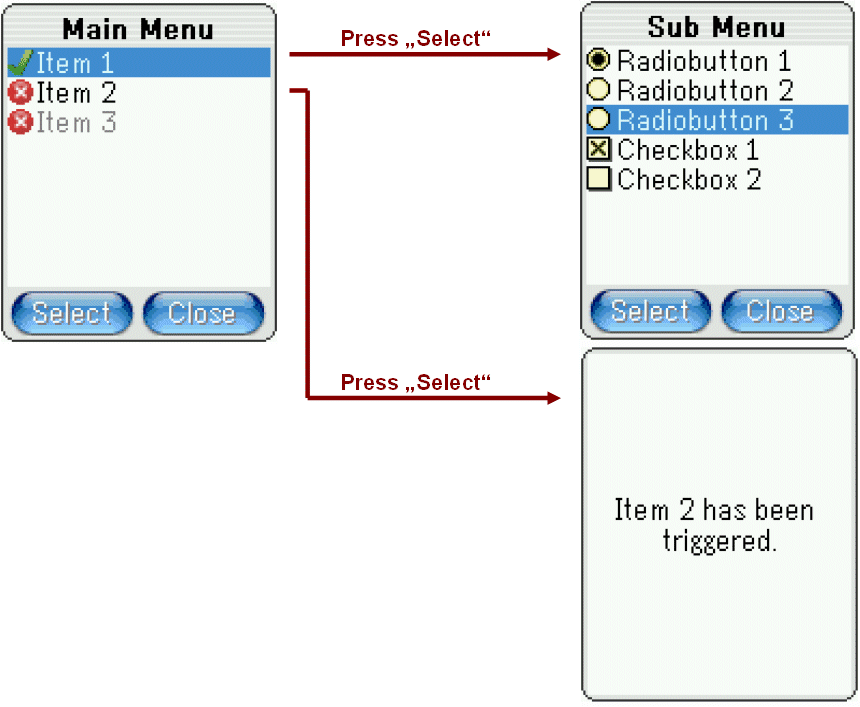

A control has the following characteristics:
The class Window extends the class Control by the following points:
Example: the phonebook application wants to close a window from the call handling application. This may not be done the following way:
void PhonebookApp::OnKeyDown(...) {
...
call_handling_win->Close(); // wrong! call_handling_win does not belong to the phonebook application
}
To close the window from the call handling application, the phonebook application
has to to this in an asynchronous way by posting a message:
void PhonebookApp::OnKeyDown(...) {
...
CloseWindowMsg(call_handling_win).Post();
}
This is valid for all other methods of a window too. To be more precise this not related to
windows only, but is a general rule when communicating between threads. It's explicitely
stated here because accessing windows from other applications is a common made mistake. As a thumb rule:
Per default each application provides a Panel, which usually is placed at the bottom of the Desktop and shows the status of the softkeys. The number of softkeys is given by KeyboardConfig::GetSoftkeyCount(). Every softkey is represented by an instance of the class Action. The following code shows how to set the softkeys of a window and react on them:
MyWindow.hpp
#include <Gui/Window.hpp>
#include <Gui/Action.hpp>
#include <Gui/CloseWindowAction.hpp>
class MyWindow : public Window {
public:
void Init();
private:
Action m_ok_action;
CloseWindowAction m_close_action;
void OpenAlert();
};
MyWindow.cpp
#include "MyWindow.hpp"
void MyWindow::Init()
{
Window::Init();
SetTitle(Tr(L"Softkeys"));
m_ok_action.Init(this, Tr(L"OK"), (Action::ExecFn)&MyWindow::OpenAlert);
SetLeftSoftkey(&m_ok_action);
m_close_action.Init(this, Tr(L"Close"));
SetRightSoftkey(&m_close_action);
}
void MyWindow::OpenAlert()
{
Alert alert(Tr(L"OK has been pressed");
alert.OpenModal();
}
After initializing an action it is assigned to the corresponding softkey by SetLeftSoftkey(...) and SetRightSoftkey. When the m_ok_action has been executed by pressing the left softkey, an alert will be opened:
The methods Window::SetLeftSoftkey(Action* action) and Window::SetRightSoftkey(Action* action) are just wrapper-methods for the method Window::SetSoftkey(INT index, Action* action).
Important: to provide backward compatibility with APOXI-version below 1.8.0 per default no Desktop is instantiated. The desktop contains the Panel which is required to display the softkeys. To instantiate the desktop overwrite the method Application::OnStartup of one application (e. g. the main-application of the MMI) the following way:
void MyApp::OnStartup()
{
Base::OnStartup();
Desktop::CreateInstance();
}
APOXI supports a variable number of softkeys. To make them available the following steps are necessary
A window can be opened modal by invoking Window::OpenModal() or modeless by invoking Window::OpenModeless().
statement 1; win.OpenModeless(); statement 2;
In this case statement 1 is executed and the window is opened modeless. This means that when invoking win.OpenModeless() the window will be opened immediately and after the window has been opened statement 2 is executed, while the window still is open.
statement 1;
win.OpenModal();
statement 2;
Now statement 1 is executed and the window is opened modal. Opening a window modal means, that the method OpenModal is exited after the window has been closed, even if this takes e. g. some minutes. Hence statement 2 is executed after the window has been closed (e. g. when pressing OK or Cancel in the opened window). Please note that when opening a window modal the system is not blocked:
This is possible by using a so called Active Wait in the implementation of Window::OpenModal. Opening a window modal makes sense especially for dialog-windows:
INT return_code = dialog_win.OpenModal();
if (return_code == DialogWindow::ConfirmId) {
// the dialog-window has been exited by pressing OK
}
else {
// the dialog-window has been exited by pressing Cancel
}
Opening windows modal burdens the callstack of the system, hence it should be avoided to open windows modal in a recursive manner.
When opening a window, the following methods of the class Window are invoked in this order:
A window can be closed by invoking Window::Close. Note that closing a window is only allowed in the context of the application the window belongs to.
When closing a window, the following methods of the class Window are invoked in this order:
CloseWindowMsg(win).Post();By this command the window will be closed as soon as the next idle state is reached.
APOXI supports a varible number of displays at the same time. To show a window on a specific display, the method Window::SetDisplayIndex(INT index) must be invoked, where index specifies the index of the display where the window should be shown. Usually the index 0, which is also the default value, indicates the main display. An already opened window can be moved to another display by invoking this method.
For the support of multiple display some configuration must be done:
UINT8 GDI_HUGE* DisplayConfig::GetFrameBuffer(INT display_idx)
{
return (display_idx == 0) ? (UINT8 GDI_HUGE*)v_ram1 : (UINT8 GDI_HUGE*)v_ram2;
}
INT DisplayConfig::GetDisplayCount()
{
return 2;
}
XYDIM DisplayConfig::GetWidth(INT display_idx)
{
return (display_idx == 0) ? 128 : 80;
}
XYDIM DisplayConfig::GetHeight(INT display_idx)
{
return (display_idx == 0) ? 160 : 100;
}
<?xml version="1.0"?>
<displaylist>
<display index="0">
<xdim>128</xdim>
<ydim>160</ydim>
<bpp>16</bpp>
<rgb_mask>
<mask color="red" index="15" count="5"/>
<mask color="green" index="10" count="6"/>
<mask color="blue" index="4" count="5"/>
</rgb_mask>
<big_endian/>
</display>
<display index="1">
<xdim>80</xdim>
<ydim>100</ydim>
<bpp>16</bpp>
<rgb_mask>
<mask color="red" index="15" count="5"/>
<mask color="green" index="10" count="6"/>
<mask color="blue" index="4" count="5"/>
</rgb_mask>
<big_endian/>
</display>
</displaylist>
After pressing a push-button the action will be executed, which has been assigned to the push-button.
The following example shows how to embed a push-button inside a window:
MyWindow.hpp
#include <Gui/Window.hpp>
#include <Gui/Action.hpp>
#include <Gui/PushButton.hpp>
class MyWindow : public Window {
public:
void Init();
private:
Action m_my_action;
PushButton m_push_button;
void OnButtonPressed();
};
MyWindow.cpp
#include "MyWindow.hpp"
void MyWindow::Init()
{
Window::Init();
m_my_action(this, Tr(L"OK"), (Action::ExecFn)&MyWindow::OnButtonPressed);
m_push_button.Init(this, &m_my_action);
}
void MyWindow::OnButtonPressed()
{
// add code for executing here (e. g. Close())
}
Usually a push-button is pressed by clicking on it with a pen, but due most mobile phones don't support pens, the push-button must be triggered manually by listening to a key, which invokes PushButton::Trigger() to execute the action of the push-button. The look may be adjusted by writing an own view as part of a theme. An available reference-implementation is available under:
A CheckBoxControl represents a checkbox, which may be selected or unselected. In contrast to a radiobutton-control, checkboxes are independent from other checkboxes per definition.
In the following example two checkboxes are added to a window:
MyWindow.hpp
#include <Gui/Window.hpp>
#include <Gui/CheckBoxControl.hpp>
class MyWindow : public Window {
public:
void Init();
protected:
virtual void OnLayoutClient();
private:
CheckBoxControl m_checkbox_1;
CheckBoxControl m_checkbox_2;
};
MyWindow.cpp
#include "MyWindow.hpp"
void MyWindow::Init()
{
Window::Init();
m_checkbox_1.Init(this, Tr(L"Checkbox 1", TRUE);
m_checkbox_2.Init(this, Tr(L"Checkbox 2", FALSE);
}
void MyWindow::OnLayoutClient()
{
Window::OnLayoutClient();
Layouter layouter(1, 2, this);
layouter.Arrange(0, 0, &m_checkbox_1);
layouter.Arrange(0, 1, &m_checkbox_2);
}
The image of the checkbox-control may be specified by the theme, by overwriting the method Theme::GetBitmap. An available reference-implementation is available under:
A RadioButtonControl represents a radiobutton, which may be selected or unselected. A radiobutton defines a "one of many" choice and makes only sense as part of a radiobutton-group. A radiobutton-group is defined by the class RadioButtonGroup and takes care, that only one radiobutton is seleced.
In the following example two radiobuttons are added to a window:
MyWindow.hpp
#include <Gui/Window.hpp>
#include <Gui/RadioButtonControl.hpp>
class MyWindow : public Window {
public:
void Init();
protected:
virtual void OnLayoutClient();
private:
RadioButtonControl m_radiobutton_1;
RadioButtonControl m_radiobutton_2;
RadioButtonGroup m_rb_group;
};
MyWindow.cpp
#include "MyWindow.hpp"
void MyWindow::Init()
{
Window::Init();
m_rb_group.Init();
m_radiobutton_1.Init(this, &m_rb_group, Tr(L"Radiobutton 1", TRUE);
m_radiobutton_2.Init(this, &m_rb_group, Tr(L"Radiobutton 2", FALSE);
}
void MyWindow::OnLayoutClient()
{
Window::OnLayoutClient();
Layouter layouter(1, 2, this);
layouter.Arrange(0, 0, &m_radiobutton_1);
layouter.Arrange(0, 1, &m_radiobutton_2);
}
The image of the radiobutton-control may be specified by the theme, by overwriting the method Theme::GetBitmap. An available reference-implementation is available under:
All menus and lists are build by adding instances of the classes Item and AbstractItemContainer to them.
The class ItemGrid is just responsible for displaying a variable number of items. Per default the item-grid only has one column and hence behaves like a listbox. The currently selected item can be retrieved by invoking ItemGrid::GetSelectedItem(), the number of columns can be changed by invoking ItemGrid::SetColumnCount() or by specifying the column count in the ItemRendererProperties.
The following example shows how to embed 3 items inside an item-grid:
MyWindow.hpp
#include <Gui/Window.hpp>
#include <Gui/ItemGrid.hpp>
#include <Gui/Item.hpp>
class MyWindow : public Window {
public:
void Init();
private:
ItemGrid m_item_grid;
Item m_item_1;
Item m_item_2;
Item m_item_3;
CloseWindowAction m_close_win_action;
};
MyWindow.cpp
#include "MyWindow.hpp"
#include <Config/Resources/confirm_icon.hpp>
#include <Config/Resources/cancel_icon.hpp>
void MyWindow::Init()
{
Window::Init();
SetTitle(Tr(L"Item Grid"));
m_item_1.Init(this, Tr(L"Item 1"), &confirm_icon);
m_item_2.Init(this, Tr(L"Item 2"), &cancel_icon);
m_item_2.SetEnabled(FALSE);
m_item_3.Init(this, Tr(L"Item 3"));
m_item_grid.Init(this);
m_item_grid.AddItem(&m_item_1);
m_item_grid.AddItem(&m_item_2);
m_item_grid.AddItem(&m_item_3);
m_close_win_action.Init(this, this, Tr(L"Close"));
SetRightSoftkey(&m_close_win_action);
}
In APOXI menus are implemented by the class ItemMenu. An item-menu may contain a variable number of items. One item is represented by the class Item. As there are also items which recursively may contain other items, it is possible to create a menu-tree.
Example: A window should be created which contains a menu with the following structure:

After pressing "Item 1" a sub-menu showing some radiobuttons and checkboxes should be displayed. When pressing "Item 2" an alert should be displayed, which shows "Item 2 has been triggered". Item 3 should stay disabled and hence cannot be triggered.
The following code shows the implementation of this menu-structure. The code needed for the hierarchical-menu is noted in bold.
MyWindow.hpp
#include <Gui/Window.hpp>
#include <Gui/ItemMenu.hpp>
class MyWindow : public Window {
public:
void Init();
private:
ItemMenu m_menu;
// declarations for main-menu
ItemContainer m_item_1;
Action m_item_2;
Action m_item_3;
// declarations for sub-menu
RadioButtonGroup m_rb_group;
RadioButtonAction m_rb_action_1;
RadioButtonAction m_rb_action_2;
RadioButtonAction m_rb_action_3;
CheckBoxAction m_cb_action_1;
CheckBoxAction m_cb_action_2;
Action m_select_action;
Action m_close_action;
void OnSelectPressed();
void OnClosePressed();
void OnItem2Pressed();
};
MyWindow.cpp
#include "MyWindow.hpp"
#include <Config/Resources/confirm_icon.hpp>
#include <Config/Resources/cancel_icon.hpp>
void MyWindow::Init()
{
Window::Init();
SetTitle(Tr(L"Main Menu"));
// initialize sub-menu
m_rb_group.Init();
m_rb_action_1.Init(this, &m_rb_group, Tr(L"Radiobutton 1"), TRUE);
m_rb_action_2.Init(this, &m_rb_group, Tr(L"Radiobutton 2"));
m_rb_action_3.Init(this, &m_rb_group, Tr(L"Radiobutton 3"));
m_cb_action_1.Init(this, Tr(L"Checkbox 1"), TRUE, TRUE);
m_cb_action_2.Init(this, Tr(L"Checkbox 2"));
m_item_1.Init(this, Tr(L"Item 1"), &confirm_icon);
m_item_1.AddItem(&m_rb_action_1);
m_item_1.AddItem(&m_rb_action_2);
m_item_1.AddItem(&m_rb_action_3);
m_item_1.AddItem(&m_cb_action_1);
m_item_1.AddItem(&m_cb_action_2);
// initialize main-menu
m_item_2.Init(this, Tr(L"Item 2"), (Action::ExecFn)&MyWindow::OnItem2Pressed);
m_item_2.SetIcon(&cancel_icon);
m_item_3.Init(this, Tr(L"Item 3"), &cancel_icon);
m_item_3.SetEnabled(FALSE);
m_menu.Init(this);
m_menu.AddItem(&m_item_1);
m_menu.AddItem(&m_item_2);
m_menu.AddItem(&m_item_3);
// initialize softkeys
m_select_action.Init(this, Tr(L"Select"), (Action::ExecFn)&MyWindow::OnSelectPressed);
SetLeftSoftkey(&m_select_action);
m_close_action.Init(this, Tr(L"Close"), (Action::ExecFn)&MyWindow::OnClosePressed);
SetRightSoftkey(&m_close_action);
}
void MyWindow::OnSelectPressed()
{
m_menu.Trigger();
}
void MyWindow::OnClosePressed()
{
if (m_menu.GetLevel() == 0)
Close();
else
m_menu.Back();
}
void MyWindow::OnItem2Pressed()
{
Alert alert(Tr(L"Item 2 has been triggered."));
alert.OpenModal();
}
In MyWindow::Init the actions of the sub-menu are initialized:
After the sub-menu the main-menu is initialized the same way:
The function members OnSelectPressed, OnClosePressed and OnItem2Pressed have been asigned to the actions and are invoked as soon as the action has been executed.
The class ItemTree implements a tree-view for items. The interface for adding items to the item-tree is nearly identical to adding items to the item-menu (see example in the previous chapter). In opposite to the item-menu the item-tree does not offer the method Back, as the opening and closing of the tree is done by the method ItemTree::Trigger.
The following code shows the implementation of the same menu-hierarchy as in example for the item-menu (chapter 6.5) but using the item-tree. The code needed for the hierarchical-menu is noted in bold.
MyWindow.hpp
#include <Gui/Window.hpp>
#include <Gui/ItemMenu.hpp>
#include <Gui/CloseWindowAction.hpp>
class MyWindow : public Window {
public:
void Init();
private:
ItemTree m_menu;
// declarations for main-menu
ItemContainer m_item_1;
Action m_item_2;
Action m_item_3;
// declarations for sub-menu
RadioButtonGroup m_rb_group;
RadioButtonAction m_rb_action_1;
RadioButtonAction m_rb_action_2;
RadioButtonAction m_rb_action_3;
CheckBoxAction m_cb_action_1;
CheckBoxAction m_cb_action_2;
Action m_select_action;
CloseWindowAction m_close_action;
void OnSelectPressed();
void OnItem2Pressed();
};
MyWindow.cpp
#include "MyWindow.hpp"
#include <Config/Resources/confirm_icon.hpp>
#include <Config/Resources/cancel_icon.hpp>
void MyWindow::Init()
{
Window::Init();
SetTitle(Tr(L"Main Menu"));
// initialize sub-menu
m_rb_group.Init();
m_rb_action_1.Init(this, &m_rb_group, Tr(L"Radiobutton 1"), TRUE);
m_rb_action_2.Init(this, &m_rb_group, Tr(L"Radiobutton 2"));
m_rb_action_3.Init(this, &m_rb_group, Tr(L"Radiobutton 3"));
m_cb_action_1.Init(this, Tr(L"Checkbox 1"), TRUE, TRUE);
m_cb_action_2.Init(this, Tr(L"Checkbox 2"));
m_item_1.Init(this, Tr(L"Item 1"), &confirm_icon);
m_item_1.AddItem(&m_rb_action_1);
m_item_1.AddItem(&m_rb_action_2);
m_item_1.AddItem(&m_rb_action_3);
m_item_1.AddItem(&m_cb_action_1);
m_item_1.AddItem(&m_cb_action_2);
// initialize main-menu
m_item_2.Init(this, Tr(L"Item 2"), (Action::ExecFn)&MyWindow::OnItem2Pressed);
m_item_2.SetIcon(&cancel_icon);
m_item_3.Init(this, Tr(L"Item 3"), &cancel_icon);
m_item_3.SetEnabled(FALSE);
m_menu.Init(this);
m_menu.AddItem(&m_item_1);
m_menu.AddItem(&m_item_2);
m_menu.AddItem(&m_item_3);
// initialize softkeys
m_select_action.Init(this, Tr(L"Select"), (Action::ExecFn)&MyWindow::OnSelectPressed);
SetLeftSoftkey(&m_select_action);
m_close_action.Init(this, this, Tr(L"Close"));
SetRightSoftkey(&m_close_action);
}
void MyWindow::OnSelectPressed()
{
m_menu.Trigger();
}
void MyWindow::OnItem2Pressed()
{
Alert alert(Tr(L"Item 2 has been triggered."));
alert.OpenModal();
}
The class ContextMenu represents a context-menu which may contain a variable number of items. As items representing an instance of the class AbstractItemContainer recursively contain other items, a context-menu also may contain sub-menus. The following images show a sample-application, which opens a context-menu above the left softkey including a sub-menu:
The most comfortable way to open a context-menu is by using a OpenContextMenuAction, which automatically opens a context-menu when it is executed. In the following example a context-menu-action is used for the left softkey:
MyWindow.hpp
#include <Gui/Window.hpp>
class MyWindow : public Window {
public:
void Init();
private:
...
OpenContextMenuAction m_options_action;
};
MyWindow.cpp
#include "MyWindow.hpp"
void MyWindow::Init()
{
Window::Init();
...
// initialize items like m_insert, m_selection etc.
...
m_options_action.Init(this, Tr(L"Options"));
m_options_action.AddItem(&m_insert);
m_options_action.AddItem(&m_selection);
m_options_action.AddItem(&m_clear);
m_options_action.AddItem(&m_switch_read_only);
m_options_action.AddItem(&m_textformat_1);
m_options_action.AddItem(&m_textformat_2);
SetLeftSoftkey(&m_options_action);
}
The constructor and Init-method of the class OpenContextMenuAction offers parameters for setting an item-container and the position of the context-menu directly.
Sometimes it might be useful, to build a context-menu without the need of having a context-menu-action. The following sample-code represents more or less the implementation of the context-menu-action:
// x ........... x-position of the context-menu
// y ........... y-position of the context-menu
// corner ...... Corner of the x- and y-position:
// ContextMenu::TopLeft, ContextMenu::TopRight,
// ContextMenu::BottomLeft or ContextMenu::BottomRight
// item_cont ... Item-Container which represents the items of the context-menu
ContextMenu* context_menu = new ContextMenu(x, y, corner, item_cont);
if (context_menu != 0) {
// use the default item-renderer properties except for:
// - the background color: the ContextMenuBackground color should be used
// - an item-container should be indicated by an arrow to signalize a sub-menu
const ItemRendererProperties* default_prop = GuiEngineConfig::GetDefaultItemRendererProperties();
ItemRendererProperties prop(default_prop->GetDisplayType(),
default_prop->GetAnimType(),
default_prop->GetScrollDelay(),
default_prop->GetScrollGap(),
default_prop->GetTextFormat(),
default_prop->FullScreenPerItem(),
default_prop->IsTransparent(),
default_prop->IsMultiLine(),
default_prop->IsVerticalCentered(),
TRUE, // indicate item container
Color(Color::ContextMenuBackground)
);
context_menu->SetRenderer(&prop);
context_menu->OpenModal();
delete context_menu;
}
Setting a specialized renderer for the context-menu is not a requirement, but it is recommended to have other renderer-properties as used for the items inside a window. For this example the background-color specified by the theme is used (e. g. usually context-menus have a kind of gray background) and items opening a sub-menu are indicated by a right-arrow.
Opening the context-menu modal burdens the callstack, but allows a deleting immediatly afterwards. If the context-menu should be openened modeless, then...
When embedding complex images like PNG, JPEG or GIF inside an item, the decoding of such an image might take up to several seconds for very large images. To avoid a blocking user interface all menus and lists of APOXI are implemented in a way, that the decoding of such images is done asynchronously in a separate thread. During the decoding the menus and lists can be navigated as usual and the images are shown automatically as soon as the decoding has been finished. If it's requested to show the images without any delay, than the images must be converted to a Bitmap or NativeImage and embedded into the item. For a description of the difference between images and bitmaps have a look at chapter 6.6: ImageBox.
The scroll behavior for all lists and menus can be defined by implementing the method GuiEngineConfig::GetScrollBehavior in the file GuiEngineConfig.cpp located in the Config directory. The following scroll behaviors are available:
It is possible to specify that the selected item is enlarged:
This can be done by setting the selection height property inside the used ItemRendererProperties. Per default all menus use the item renderer properties returned by const ItemRendererProperties* GuiEngineConfig::GetDefaultItemRendererProperties(). If the selection height is set there, all menus will use this height per default.
If the setting should only be valid for one instance of a menu, the renderer of this menu must be initialized with corresponding item renderer properties. In the following example a copy of the default item renderer is used, the selection height is adjusted and assigned to a menu:
ItemRendererProperties* prop = new ItemRendererProperties();
if (prop != 0) {
const ItemRendererProperties* default_prop = GuiEngineConfig::GetDefaultItemRendererProperties();
ASSERT_DEBUG(default_prop != 0);
*prop = *default_prop;
prop->SetSelectionHeight(48);
menu->SetRenderer(prop);
...
// note that the renderer properties 'prop' may not get deleted as long as the menu is alive
}
As the selection is enlarged, it also might be required to use an enlarged and different icon for the selection:
Usually when assigning an icon to an item this is done by assigning a bitmap:
Bitmap* bmp = ...; item.SetIcon(bmp);
... or an image embedded inside an image obtainer:
JpegImage* jpeg_image = new JpegImage(...); item.SetIcon(ImageObtainer(jpeg_image, TRUE));
But it is also possible to assign an IconSet for an image. The icon set provides the sizes SmallSize, DefaultSize and LargeSize for the modes NormalMode, ActiveMode and DisabledMode:
The icons for the different modes and sizes can be set the following way
NativeImage* default_img = new NativeImage(...);
NativeImage* default_active_img = new NativeImage(...);
NativeImage* large_active_img = new NativeImage(...);
IconSet icon_set(ImageObtainer(default_img, TRUE)); // default icon
icon_set.AddIcon(IconState(IconState::DefaultSize, IconState::ActiveMode),
ImageObtainer(default_active_img, TRUE));
icon_set.AddIcon(IconState(IconState::LargeSize, IconState::ActiveMode),
ImageObtainer(large_active_img, TRUE));
item.SetIcon(icon_set);
If an icon is not defined for a specific mode and size, the default icon (= mode is NormalMode, size is DefaultSize) will be used.
When the icon should be drawn, it is checked which mode is used: When the item is selected, the mode ActiveMode is used, if it is disabled the DisabledMode is used. Also it must be determined, which size should be used: The item renderer properties define the available size for the icon. As the icons usually should not get scaled, the available height is taken and compared to the preferred sizes for the modes SmallSize, DefaultSize and LargeSize, which are defined by static Size GuiEngineConfig::GetIconSize(IconState::Size size) inside the configuration class GuiEngineConfig:
Size GuiEngineConfig::GetIconSize(IconState::Size size)
{
switch (size) {
case IconState::LargeSize: return Size(32, 32);
case IconState::SmallSize: return Size( 8, 8);
case IconState::DefaultSize:
default: return Size(24, 24);
}
}
This means when e. g. a height of 28 pixels is available, the icon defined for DefaultSize will be used. Specifying the item renderer properties and the preferred sizes for the icon size states should be done in a coordinated manner and fit to the available icon sizes. The best results can be achieved if the icons have exactly the same size as defined for the icon size states.
The following restriction is given for icon sets: The menu controls only respect icon sets containing images which can be decoded synchronously (e. g. bitmaps or native images). This is because showing an icon set containing images which must be decoded asynchronously (e. g. JPEGs, GIFs, PNGs) would require a lot of memory for buffering all images.
APOXI offers the following kind of editor controls:
All editors have in common, that the input-method may be exchanged easily by so called input-mappers, which are derived from the class InputMapper. APOXI offers default input-mappers for the most usual input-methods, but this may be extended in an easy manner by customized input-mappers: The editor invokes the factory-method EditConfig::AllocInputMapper() with the given ID as input-mapper, which results in creating an instance of the requested input-mapper. This factory-method is customer-specific and must be overwritten in the configuration-file EditConfig.cpp.
If the editor has the focus it forwards each key-message to its input-mapper. The input-mapper interprets the key-message and controls the cursor and content of the editor by using the public interface of the editor.
The public interface of the editors distincts between atom-items and compound-items:
TextCompoundItem* text = TextCompoundItem::CreateInstance(L"Text");After passing a compound-item-pointer to the editor (e. g. by editor->InsertCompoundItem(text)) the compount item is obtained by this editor per definition and the releasing of the compound-item is done by the editor itself by invoking ReleaseInstance(). So never release a compound-item after passing it to the editor.
Examples how to insert atom-items and compound-items into the editor are given in the chapter "6.6.6 MultiMediaEditor".
The line-editor offers the following features:
In the following example a line-editor with an additional description is added to a window:
MyWindow.hpp
#include <ApoxiLib.hpp>
class MyWindow : public Window {
public:
void Init();
protected:
virtual void OnLayoutClient();
private:
TextLine m_descr;
LineEditor m_editor;
};
MyWindow.cpp
#include "MyWindow.hpp"
void MyWindow::Init()
{
Window::Init();
m_descr.Init(this, Tr(L"Enter a phone number:"));
m_editor.Init(this, InputMapper::PhoneNumber);
}
void MyWindow::OnLayoutClient()
{
Window::OnLayoutClient();
Layouter layouter(1, 2, this);
layouter.Arrange(0, 0, &m_descr);
layouter.Arrange(0, 1, &m_editor);
}
Represents a line-editor, which uses a date-input-mapper for editing a date.

Represents a line-editor, which uses a time-input-mapper for editing a time.

Represents a line-editor, which hides each character by a '*'.

The multi-line-editor offers the following features:
The APOXI-AddOn MultiMedia offers a multi-media-editor with the following features:
The following example shows how to the multi-media-editor with paragraphs containing rich-text and images.
MyWindow.hpp
#include <ApoxiLib.hpp>
class MyWindow : public Window {
public:
void Init();
private:
MultiMediaEditor m_editor;
};
MyWindow.cpp
#include "MyWindow.hpp"
void MyWindow::Init()
{
Window::Init();
m_editor.Init(this, InputMapper::MultiTap);
const Font& font = System::GetFont(Font::Client);
// create a rich text with red color and grey background
RichTextCompoundItem* rich_text_1 = RichTextCompoundItem::CreateInstance(font, L"Rich text compound item 1");
rich_text_1->SetForegroundColor(Color(255, 0, 0)); // red text
rich_text_1->SetBackgroundColor(Color(90, 90, 90)); // grey background
// create a rich text with bold font
RichTextCompoundItem* rich_text_2 = RichTextCompoundItem::CreateInstance(font, L"Rich text compound item 2");
rich_text_2->SetTextAttr(TextFormat::Bold);
// create a right aligned paragraph, which contains both rich texts
ParagraphCompoundItem* paragraph_1 = ParagraphCompoundItem::CreateInstance(EditorDocument::RightAlign);
paragraph_1->InsertCompoundItem(rich_text_1);
paragraph_1->InsertCompoundItem(rich_text_2);
// create two image-items
Image* img_1 = ...; // see chapter "7.7 ImageBox" for details
ImageItem img_item_1(ImageObtainer(img_1));
Image* img_2 = ...; // see chapter "7.7 ImageBox" for details
ImageItem img_item_2(ImageObtainer(img_2));
// create a centered paragraph, which contains the image-items
ParagraphCompoundItem* paragraph_2 = ParagraphCompoundItem::CreateInstance(EditorDocument::LeftAlign);
paragraph_2->InsertItem(img_item_1);
paragraph_2->InsertItem(img_item_2);
// insert both paragraphs into the editor
m_editor.InsertCompoundItem(paragraph_1);
m_editor.InsertCompoundItem(paragraph_2);
}
When working with the multimedia editor it often is required to parse the document content and maybe to adjust compound items. The following code searchs a compound item which has the text "Hello" and adds an image in front of it:
| Before | After |
MultiMediaEditorDocument* doc = static_cast<MultiMediaEditorDocument*>(editor.GetDocument());
CompoundItemIterator it(doc);
if (it.Begin()) {
BOOLEAN found = FALSE;
do {
INT start_index = 0;
const CompoundItem* comp_item = it.Get(&start_index);
if (comp_item->IsInstanceOf(TextCompoundItem::ID)) {
const TextCompoundItem* text_comp_item = static_cast<const TextCompoundItem*>(comp_item);
const WString& text = text_comp_item->GetText();
if (text.CompareTo(L"Hello") == 0) {
// Text compound item having "Hello" as content has been found.
// Now add an image in front of it.
Image* img = ...; // see chapter "7.7 ImageBox" for details
ImageItem image_item(ImageObtainer(img));
doc->InsertItem(image_item, start_index);
// After the document has been modified directly the editor itself must be updated
editor.Update();
found = TRUE;
}
}
} while (!found && it.Next());
}
The class CompoundItemIterator allows to traverse all leafs of the multimedia editor document. Note that the document content can be very complex and may contain nested compound items as soon as paragraphs are used. To know the internal document structure APOXI offers a hint on the host environment: when inserting the number 5002 to the file DbgOutRange.txt located in the APOXI_TEMP directory, DBG_OUT messages are shown when moving the cursor inside a multimedia editor. For example the output to the corresponding content looks like this:
|
Content of Multimedia-Document: ParagraphCompoundItem (15) RichTextCompoundItem (4): "Abc " GeneralCompoundItem (1) RichTextCompoundItem (5): "Hello" RichTextCompoundItem (4): " Dfg" ParagraphMarker (1): "<--" total items: 15 |
|
|
Content of Multimedia-Document: ParagraphCompoundItem (65) RichTextCompoundItem (20): "This is a paragraph " RichTextCompoundItem (10): "containing" RichTextCompoundItem (28): " various rich text compound " RichTextCompoundItem (6): "items." ParagraphMarker (1): "<--" ParagraphCompoundItem (103) RichTextCompoundItem (38): "This paragraph contains an animation, " GeneralCompoundItem (1) RichTextCompoundItem (61): " a yellow rich text compound item, an image and a sound item:" GeneralCompoundItem (2) ParagraphMarker (1): "<--" ParagraphCompoundItem (83) RichTextCompoundItem (82): "This paragraph is horizontally centered between the left and right editor borders." ParagraphMarker (1): "<--" ParagraphCompoundItem (61) RichTextCompoundItem (60): "This paragraph is aligned to the right border of the editor." ParagraphMarker (1): "<--" total items: 312 |
The editors use an InputMapper for interpreting pressed keys to modify the content of the document. E. g. when pressing the key 2 the NumericInputMapper inserts the number 2 into the document. The input mapper also takes care to navigate the caret of the editor. Every input mapper has a unique ID, where the following IDs are available per default in APOXI:
The following sample code shows how a MultiTapInputMapper is assigned to a line editor:
#include <Gui/Window.hpp>
#include <Gui/LineEditor.hpp>
class MyWindow : public Window {
public:
void Init();
private:
LineEditor m_editor;
};
MyWindow.cpp
#include "MyWindow.hpp"
#include <Gui/InputMapper.hpp>
void MyWindow::Init()
{
Window::Init();
m_editor.Init(this, InputMapper::MultiTap);
}
When initializing the editor with the input mapper ID, the instance of the input mapper is created by the factory method AllocInputMapper inside the class EditConfig:
InputMapper* EditConfig::AllocInputMapper(INT input_mapper_id)
{
InputMapper* input_mapper = 0;
switch (input_mapper_id) {
case InputMapper::Calculator:
input_mapper = new CalculatorInputMapper();
break;
case InputMapper::Date:
input_mapper = new DateTimeInputMapper(TRUE);
break;
case InputMapper::Time:
input_mapper = new DateTimeInputMapper(FALSE);
break;
case InputMapper::MultiTap:
input_mapper = new MultiTapInputMapper();
break;
case InputMapper::Numeric:
input_mapper = new NumericInputMapper();
break;
case InputMapper::PhoneNumber:
input_mapper = new PhoneNumberInputMapper();
break;
case InputMapper::IpAddress:
input_mapper = new IpAddrInputMapper();
break;
default:
break;
}
return input_mapper;
}
The implementation of this method can be customized in any manner. For example it is possible to implement a custom class for the input mapper ID PhoneNumber. By this approach no application code must be changed when a different input mapper should be used for the phone number input method. Here is the original implementation of the class PhoneNumberInputMapper as sample for a custom implementation:
PhoneNumberInputMapper.hpp
#include <Gui/NumericInputMapper.hpp>
class PhoneNumberInputMapper : public NumericInputMapper {
public:
explicit PhoneNumberInputMapper();
virtual ~PhoneNumberInputMapper();
virtual INT GetId() const;
virtual Alphabet GetAlphabet() const;
protected:
virtual BOOLEAN OnKeyDown(KeyCode key_code);
virtual BOOLEAN OnLongKeyPress(KeyCode key_code);
private:
void InsertChar(WCHAR chr);
void ReplaceChar(WCHAR chr);
};
PhoneNumberInputMapper.cpp
#include "PhoneNumberInputMapper.hpp"
#include <Gui/CharItem.hpp>
#include <Gui/AbstractEditor.hpp>
#include <Config/KeyboardConfig.hpp>
#include <Config/EditConfig.hpp>
PhoneNumberInputMapper::PhoneNumberInputMapper() : NumericInputMapper() {}
PhoneNumberInputMapper::~PhoneNumberInputMapper() {}
INT PhoneNumberInputMapper::GetId() const { return PhoneNumber; }
InputMapper::Alphabet PhoneNumberInputMapper::GetAlphabet() const { return SevenBitAlphabet; }
BOOLEAN PhoneNumberInputMapper::OnKeyDown(KeyCode key_code)
{
BOOLEAN dispatched = TRUE;
if (key_code == KeyboardConfig::GetCustomKey(L'*')) {
InsertChar(L'*');
}
else if (key_code == KeyboardConfig::GetCustomKey(L'#')) {
InsertChar(L'#');
}
else {
dispatched = Base::OnKeyDown(key_code);
}
return dispatched;
}
BOOLEAN PhoneNumberInputMapper::OnLongKeyPress(KeyCode key_code)
{
BOOLEAN dispatched = TRUE;
if (key_code == KeyboardConfig::GetCustomKey(L'*')) {
ReplaceChar(EditConfig::GetWildcard());
}
else if (key_code == KeyboardConfig::GetCustomKey(L'#')) {
ReplaceChar(EditConfig::GetDtmfSeparator());
}
else if (key_code == KeyboardConfig::GetNumber(0)) {
ReplaceChar(L'+');
}
else {
dispatched = Base::OnLongKeyPress(key_code);
}
return dispatched;
}
void PhoneNumberInputMapper::InsertChar(WCHAR chr)
{
AbstractEditor* editor = GetEditor();
const CharItem ci(chr);
if (editor->GetEditMode() == Caret::Overwrite) {
editor->ReplaceItem(ci);
}
else {
editor->InsertItem(ci);
}
editor->MoveCaret(+1);
}
void PhoneNumberInputMapper::ReplaceChar(WCHAR chr)
{
AbstractEditor* editor = GetEditor();
const CharItem ci(chr);
const INT index = editor->GetCaretIndex() - 1;
editor->ReplaceItem(ci, index);
}
The input mapper offers the hooks OnKeyDown, OnLongKeyPress and OnKeyUp which are invoked for each key press done inside the editor. The key press is translated into a character which can be added to the editor by invoking Editor::InsertItem or Editor::ReplaceItem. The caret of the editor can be moved by Editor::MoveCaret.
Note that the default input mappers offer some options in their constructor, which might fulfill requirements already so that no custom implementation is required. For example the input mappers DateTimeInputMapper and IpAddrInputMapper allow to highlight the currently entered field by passing TRUE for the parameter 'highlight_field':
Per default the following look is used ('highlight_field' is FALSE):
The input mapper has a factory method GetCaret, which may be overwritten to implement a customized Caret. Every caret is part of an editor and describes the position and the look of the cursor. The position is defined by the row and the column. The caret is allocated and freed by the input mapper; also the input mapper has to provide its caret by the necessary parameters for displaying the right hint or mode.
A good example about the capabilities of the caret is the MultiTapCaret:
The class MultiTapCaret has overwritten the GetCaret method the following way:
Caret* MultiTapInputMapper::GetCaret()
{
if (m_caret == 0) {
m_caret = new MultiTapCaret(GetEditor(), EditConfig::GetBlinkRate(), (BOOLEAN)m_bits.show_preview);
}
return m_caret;
}
Usually the input mapper and it's caret work together quite close. In the case of the multi tap input mapper all the necessary information for displaying the preview in the multi tap caret is provided. There are a few basic hooks which are documented in detail inside Caret and InputMapper.
A TabControl allows to embed controls inside a variable number of tab pages. The navigation between the tab pages is done by the left and right arrow key. A tab page is represented by a text, an icon and a control which acts as page content.
The following examples shows a tab control with three tab pages:
#include <Gui/Window.hpp>
#include <Gui/TabControl.hpp>
#include <Gui/MultiLineEditor.hpp>
#include <Gui/CheckBoxControl.hpp>
class MyWindow : public Window {
public:
MyWindow();
virtual ~MyWindow();
void Init();
private:
TabControl m_tab_control;
// actions for softkeys
Action m_ok_action;
CloseWindowAction m_close_action;
// content of tab page 1
MultiLineEditor m_editor;
// content of tab page 2
GridLayout m_grid_layout;
TextLine m_text_line;
CheckBoxControl m_checkbox1;
CheckBoxControl m_checkbox2;
// content of tab page 3
ItemGrid m_list;
Item m_item_1;
Item m_item_2;
Item m_item_3;
void OnOkPressed(); // will be executed if the OK softkey has been pressed
};
MyWindow.cpp
#include "MyWindow.hpp"
#include <Config/Resources/confirm_icon.hpp>
#include <Config/Resources/cancel_icon.hpp>
MyWindow::MyWindow()
{
}
MyWindow::~MyWindow()
{
}
void MyWindow::Init()
{
Window::Init();
SetTitle(Tr(L"TabControl Test"));
Maximize();
// initialize softkeys
m_ok_action.Init(this, Tr(L"OK"), (Action::ExecFn)&MyWindow::OnOkPressed);
SetLeftSoftkey(&m_ok_action);
m_close_action.Init(this, this, Tr(L"Close"));
SetRightSoftkey(&m_close_action);
// initialize tab page 1
m_editor.Init(this, InputMapper::MultiTap, L"This is a MultiLineEditor embedded into a tab page.");
m_editor.SetReadOnly(TRUE);
m_editor.SetFrameType(Control::NoFrame);
// initialize tab page 2
m_grid_layout.Init(this, 3, 1);
m_text_line.Init(&m_grid_layout, Tr(L"Text"));
m_checkbox1.Init(&m_grid_layout, Tr(L"Checkbox 1"));
m_checkbox2.Init(&m_grid_layout, Tr(L"Checkbox 2"));
m_grid_layout.SetCellProperties(0, 0, &m_text_line);
m_grid_layout.SetCellProperties(1, 0, &m_checkbox1);
m_grid_layout.SetCellProperties(2, 0, &m_checkbox2);
// initialize tab page 3
m_list.Init(this);
m_item_1.Init(this, L"Max Headroom");
m_item_2.Init(this, L"Jeff Wright");
m_item_3.Init(this, L"Dennis Righthouse");
m_list.AddItem(&m_item_1);
m_list.AddItem(&m_item_2);
m_list.AddItem(&m_item_3);
m_tab_control.Init(this);
m_tab_control.AddTab(&m_editor, Tr(L"Tab1"), &confirm_icon);
m_tab_control.AddTab(&m_grid_layout, Tr(L"Tab2"), &cancel_icon);
m_tab_control.AddTab(&m_list, Tr(L"Tab3"), &confirm_icon);
}
void MyWindow::OnOkPressed()
{
// access the current tab control here e. g. toggling the the checkboxes
// can be done like this:
const INT index = m_tab_control.GetActiveTab();
if (m_tab_control.GetPage(index) == &m_grid_layout) {
Control* focused_control = m_grid_layout.GetFocusedControl();
if ((focused_control != 0) && focused_control->IsInstanceOf(CheckBoxControl::ID)) {
CheckBoxControl* checkbox = (CheckBoxControl*)focused_control;
checkbox->Toggle();
}
}
else {
Alert msg_box(Tr(L"OK has been pressed"));
msg_box.OpenModal();
}
}
When several controls should be part of a page, it is recommended to use a GridLayout as control representing the page. The grid layout allows to layout any kind of components inside the given boundaries. In the example the tab page two uses a grid layout containing 3 vertical aligned components.
How to access the content of an active page is shown inside the method MyWindow::OnOkPressed. The method TabControl::GetActiveTab returns the index of the active tab. This index can be used to get the control representing the page by TabControl::GetPage.
Per default the text and the icon of a tab page are shown inside the tab button at the top. If the texts are very long and many tabs are shown, it might be useful to enable a header line to reduce clutter. Enabling the header line can be done by invoking the method TabControl::SetHeaderEnabled(TRUE):
The text will be shown below the tab buttons using the full available width of the tab control.
The width and the height of a tab button is defined by the TabButtonView implemented by the current set theme (see Chapter 8: Themes for details). The following properties can be defined for the tab button:
In the following screenshot a default width of 70 pixels has been used. As not all pages fit into the available width, a horizontal scrolling is done.
The default theme of APOXI allows to customize the properties for the default height, default width, minimum width, maximum width and clipped inside the class OptionalConfig. For the settings TabButtonDefaultHeight, TabButtonDefaultWidth, TabButtonMinimumWidth, TabButtonMaximumWidth and TabButtonClippedWidth a corresponding value must be returned for the method BOOLEAN OptionalConfig::GetSetting(INT group_id, INT setting_id, INT &result)
The look of the tab control including the tab buttons can be customized by implementing a custom view object for TabButtonView and TabControlView. A sample implementation is available under Apoxi/GlobalThemes/DefaultTheme/DefaultTabButtonView.* and Apoxi/GlobalThemes/DefaultTheme/DefaultTabControlView.*. See also Chapter 8: Themes for details how to implement views for a custom theme.